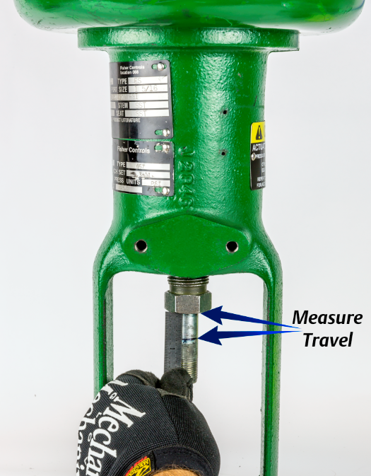

ch3-m2 pass: figrow; bench set off the valve — steps 1 & 2 (slide 99 folded in)
Bench Set — Off the Valve


Off the valve — no packing friction; the travel between the marks must equal the nameplate rated travel.

Off the valve — no packing friction; the travel between the marks must equal the nameplate rated travel.